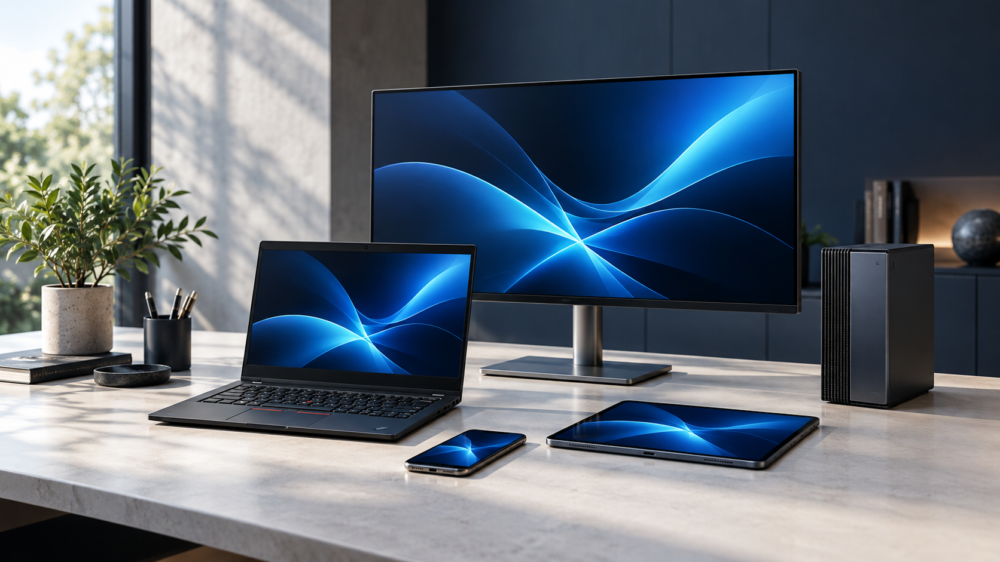
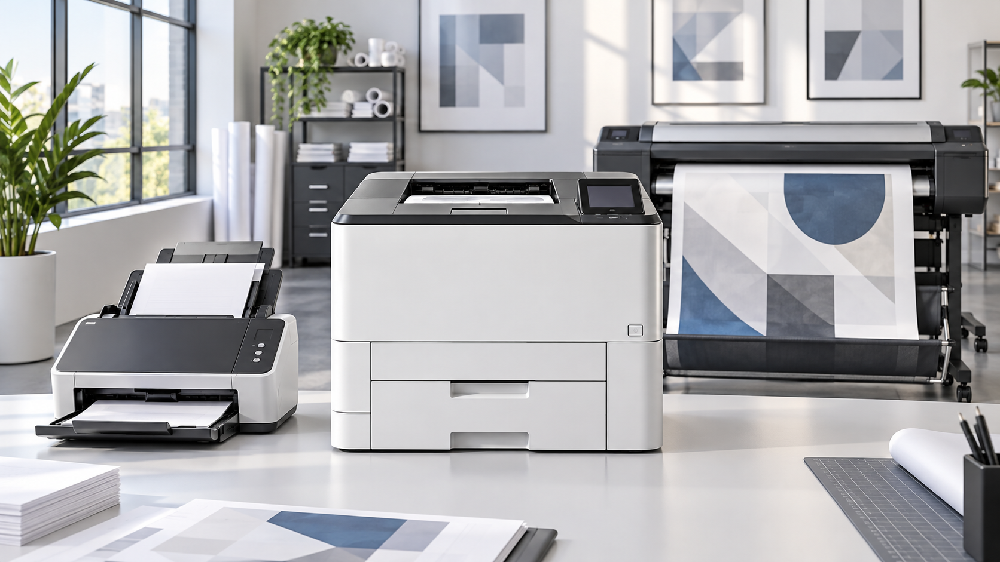
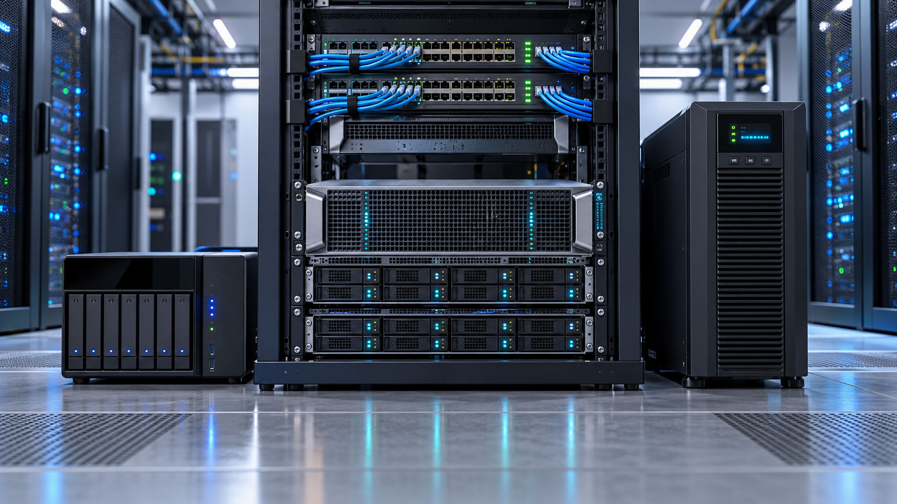
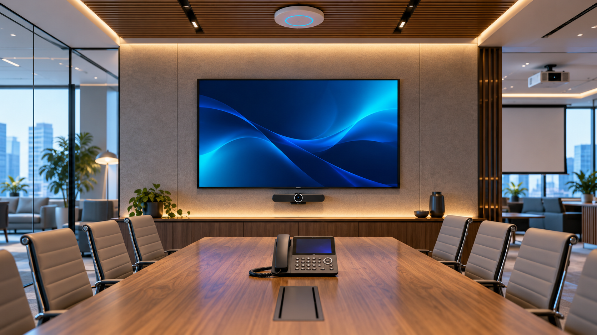

Puestos de trabajo
Equipamiento para usuarios, áreas operativas y entornos administrativos.
- Notebooks y computadoras de escritorio
- Mini PC y monitores
- Tablets y celulares
Productos
Desde el puesto de trabajo hasta la infraestructura, orientamos la elección de tecnología según el uso, el entorno y los requerimientos de cada proyecto.
Categorías
Trabajamos sobre categorías tecnológicas que ayudan a equipar, conectar, proteger y sostener entornos de trabajo. La recomendación final surge de la consulta técnica y comercial.

Equipamiento para usuarios, áreas operativas y entornos administrativos.

Soluciones para documentos, procesos y producción gráfica.

Tecnología para sostener sistemas, datos y continuidad operativa.

Dispositivos para conectar espacios, equipos y conversaciones.
Cómo trabajamos
Antes de proponer una alternativa, buscamos comprender el escenario: cantidad de usuarios, criticidad, espacios, conectividad, continuidad, presupuesto y tiempos. Ese análisis permite orientar la consulta hacia una solución adecuada.
Consultar por equiposPreguntas frecuentes
La empresa informa cobertura nacional para la provisión de tecnología. La disponibilidad, entrega y modalidad se confirman según el proyecto y la ubicación.
Sí. La consulta puede partir de una necesidad general, como renovar puestos de trabajo, equipar una sala o actualizar infraestructura.
No. Un catálogo puede aportar información, pero la selección requiere considerar el contexto de uso y los requisitos de cada organización.